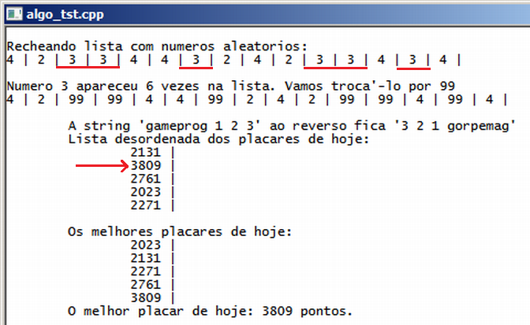

Curso completo de linguagem C++
Gameprog - Escola de programação de jogos digitais
Contato: gameprog.br@gmail.com
track28.html
28. <algorithm>
19.1 Visão geral
A biblioteca STL tem um pacote de utilitários muito útil para programação em
geral que podem ser bem aproveitados em programação de jogos. Trata-se de
uma coleção de algorítmos para organizar dados, localizar dados e outras
operações sobre os containers (vector, list...).
Para utilizar esse conjunto de utilitário, que consiste em torno de 70 funções,
você deve incluir o arquivo <algorithm> em seu programa.
Vamos apresentar as seguintes funções desse pacote:
sort() - Organiza um conjunto de dados em ordem crescente. Bom para
organizar os placares e outros números gerados pelo jogador durante
uma partida de videogame.
generate() - preenche um container com o dado especificado.
for_each() - executa uma operação especificada em um conjunto de dados do
container.
reverse() - inverte a ordem dos dados de um container. O último dado passa
a ser o primeiro e assim por diante.
replace()- substitui as ocorrências de um dado especificado em um container.
É muito comum estas funções aceitarem como argumento os iterators que apontam
para o começo e o fim do container, e ainda uma falsa função definida pelo
implementação do operador operator().
Em nosso programa abaixo criamos um lista de 15 inteiros, alojados em um container
da classe vetor que sofre as operações dos algoritmos apresentados acima.

// algo_tst.cpp
// Esse programa ilustra o uso dos utilitários do arquivo <algorithm>
#include <iostream>
#include <string>
#include <vector>
#include <algorithm>
using namespace std;
// ***************************************************************************
// Classe de serviço de impressão de números inteiros
class Impressora_virtual {
public:
int m_pularLinha;
Impressora_virtual (int config = 0): m_pularLinha(config) {}
// Vamos imprimir números inteiros
void operator()(int nval)
{ if (m_pularLinha == 1) cout << "\t\t";
cout << nval << " | ";
if (m_pularLinha == 1) cout << endl;
} // fim do método operator()
}; // fim da classe impressora virtual
// ***************************************************************************
// Classe geradora de números aleatórios
class Sorteador {
private:
int m_min;
int m_max;
public:
Sorteador(int nmin, int nmax): m_min(nmin), m_max(nmax) {}
// Vamos retornar um número aleatório faixa (m_mim, m_max)
int operator()()
{
return m_min + rand() % (m_max - m_min + 1);
} // fim do metodo operator()
}; // fim da classe: Sorteador
// ---------------- O programa principal começa aqui -------------------------
int main() {
system("color f0"); system("title algo_tst.cpp"); cout << endl;
Impressora_virtual impressora;
Sorteador sorteador(2, 4);
Sorteador xsorteador(2000,4000);
// Vamos criar uma lista para 15 numeros
vector<int> lstPlacar ;
lstPlacar.resize(15);
// O objeto sorteador() vai gerar números entre (2,4)
cout << "\nRecheando lista com numeros aleatorios: \n";
srand(time(0));
generate(lstPlacar.begin(), lstPlacar.end(), sorteador);
// O objeto impressora(nval) vai imprimir numeros assim: nval | nval |...
for_each(lstPlacar.begin(), lstPlacar.end(), impressora);
// Vamos contar frequência do número 3 na lista
int nfrequencia = count (lstPlacar.begin(), lstPlacar.end(), 3);
cout << "\n\nNumero 3 apareceu " << nfrequencia;
cout << " vezes na lista. Vamos troca'-lo por 99\n";
// Vamos substituir o nro 3 pelo nro 99 na lista
replace(lstPlacar.begin(), lstPlacar.end(), 3,99);
for_each(lstPlacar.begin(), lstPlacar.end(), impressora);
string sname = "gameprog 1 2 3";
cout << "\n\n\tA string '" << sname << "' ao reverso fica '";
reverse(sname.begin(), sname.end());
cout << sname << "'" << endl;
// Vamos gerar uma lista de placar com números maiores
cout << "\tLista desordenada dos placares de hoje: \n";
generate(lstPlacar.begin(), lstPlacar.end()-10, xsorteador);
// O objeto impressora(nval) vai imprimir numeros assim: nval | nval |...
Impressora_virtual ximpressora(1);
for_each(lstPlacar.begin(), lstPlacar.end()-10, ximpressora);
cout << "\n\tOs melhores placares de hoje: " << endl;
sort(lstPlacar.begin(), lstPlacar.end()-10);
for_each(lstPlacar.begin(), lstPlacar.end()-10, ximpressora);
cout << "\tO melhor placar de hoje: " << lstPlacar[4] << " pontos. \n\n";
cout << endl; system("pause");
} // fim da funcao: main()
Explicando nossa impressora virtual
// ***************************************************************************
// Classe de serviço de impressão de números inteiros
class Impressora_virtual {
public:
int m_pularLinha;
Impressora_virtual (int config = 0): m_pularLinha(config) {}
// Vamos imprimir números inteiros
void operator()(int nval)
{ if (m_pularLinha == 1) cout << "\t\t";
cout << nval << " | ";
if (m_pularLinha == 1) cout << endl;
} // fim do metodo operator()
}; // fim da classe impressora virtual
Nossa classe Impressora_virtual produz um objeto de apenas um método
(impressora()) e uma propriedade (m_pularLinha):
Impressora_virtual impressora;
Impressora_virtual ximpressora(1);
Como o operador operator() foi implementado esse dois objetos podem ser usados
dessa forma:
cout << impressora(100); // Produz a saída 10 |
cout << ximpressora(120); // Imprime "\t\t", o valor 120 e depois "|\n";
Note que esse objeto funciona semelhante a uma função. Essa construção é
denominada functor ou objeto-função na literatura de programação. A função
for_each() aceita como argumento um objeto-função que realiza uma operação
em cada dado do conjunto de dados delimitados pelos iterators .begin() e
.end() do container utilizado. Utilizamos nosso objeto impressora com
for_each() para mostrar cada um dos inteiros de nossa lista.
Explicando nossa classe geradora de números aleatórios
// ***************************************************************************
// Classe geradora de números aleatórios
class Sorteador {
private:
int m_min;
int m_max;
public:
Sorteador(int nmin, int nmax): m_min(nmin), m_max(nmax) {}
// Vamos retornar um numero aleatorio na faixa (m_mim, m_max)
int operator()()
{
return m_min + rand() % (m_max - m_min + 1);
} // fim do metodo operator()
}; // fim da classe: Sorteador
Tal como fizemos com nossa classe Impressora_virtual, o objeto da classe
Sorteador vai produzir um objeto que vai funcionar como uma função e
vai ser passado como argumento para a função para a função generate() que
vai usá-la como fonte dos números para preenchimento de nossa lista.
Sorteador sorteador(2, 4); // Vai retornar números entre 2 - 4
Sorteador xsorteador(2000,4000); // Vai retornar nros entre 2000 - 4000
Como o operador operator() foi definido nesta classe esses objetos podem ser
usados de forma semelhante a uma função:
cout << sorteador();
cout << xsorteador();
Usando generate()
// O objeto sorteador() vai gerar numeros entre (2,4)
cout << "\nRecheando lista com números aleatórios: \n";
srand(time(0));
generate(lstPlacar.begin(), lstPlacar.end(), sorteador);
Veja acima como utilizar a função generate() que preenche a lista de inteiros
com os números retornados pelo objeto-função especificado.
Usando for_each()
// O objeto impressora(nval) vai imprimir numeros assim: nval | nval |...
for_each(lstPlacar.begin(), lstPlacar.end(), impressora);
Veja como usar o algoritmo for_each() ilustrado acima. Cada dado do vetor
lstPlacar vai ser passado como argumento para impressora().
Usando count()
// Vamos contar frequencia do numero 3 na lista
int nfrequencia = count (lstPlacar.begin(), lstPlacar.end(), 3);
cout << "\n\nNumero 3 apareceu " << nfrequencia;
count() conta a ocorrência do dado especificado do container passado como
argumento na forma dos iterators.
Usando count()
// Vamos substituir o nro 3 pelo nro 99 na lista
replace(lstPlacar.begin(), lstPlacar.end(), 3,99);
Aqui usamos replace() para substituir todas as ocorrências do número 3
pelo número 99.
Usando reverse()
string sname = "gameprog 1 2 3";
cout << "\n\n\tA string '" << sname << "' ao reverso fica '";
reverse(sname.begin(), sname.end());
A função reverse() revira o conteúdo de um container de cabeça pra baixo.
O primeiro elemento passa a ser o último, o último o primeiro e assim por
diante.
(*) É importante destacar que a classe string foi implementada para trabalhar
bem com o conjunto geral de STL podendo então sofrer as operações realizadas
pelos algoritmos da biblioteca <algorithm>. Veja acima que o objeto string
também apresenta os iterators como métodos normais.
sort() - Organizando números
cout << "\n\tOs melhores placares de hoje: " << endl;
sort(lstPlacar.begin(), lstPlacar.end()-10);
A função sort() organiza um container em ordem crescente.